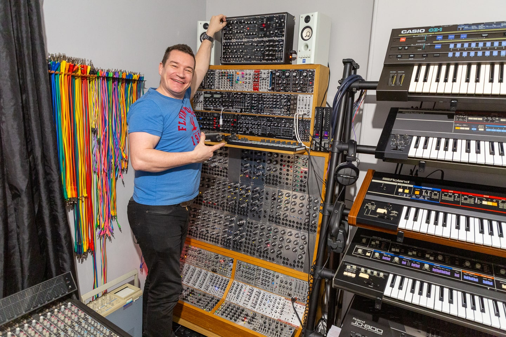
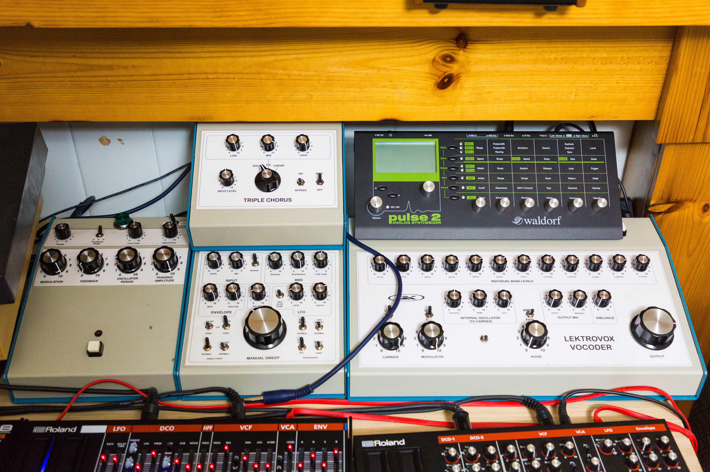

Richard's musical tools have been an ever-evolving accumulation over the decades. Starting out with 8- and 16-bit computers and a couple of synthesizers in the '80s. Over the decades Richard has slowly amassed an admirable collection of synthesizers, effects and studio production tools; many of which are now considered vintage classics.
Richard has also had a keen interest in audio electronics and has built many interesting and unique analogue machines. Starting out in the early days modifying electronic toys, building analogue filters for his first keyboards and simple drone generators built on stripboard and etched PCB's. His latest hand-built projects include fully featured 5U and Eurorack modular systems, as well as semi-modular synthesizers, not to mention his array of analogue effects. This collection has been a steady progression built up to the studio we see today used to create some of his finest works.
Richard has also had a keen interest in audio electronics and has built many interesting and unique analogue machines. Starting out in the early days modifying electronic toys, building analogue filters for his first keyboards and simple drone generators built on stripboard and etched PCB's. His latest hand-built projects include fully featured 5U and Eurorack modular systems, as well as semi-modular synthesizers, not to mention his array of analogue effects. This collection has been a steady progression built up to the studio we see today used to create some of his finest works.
Studio


×

Synthesizers


×

DIY & Handbuilt Gear



×

Kitlist
Mono Synths:
Arp Odyssey
Behringer TD3 Modded Out
Cyclone TT 303 Mk1
Korg MS 10 mk1
Korg MS 20 mk1
Korg MS 20 mini (modified)
Korg Prophecy (x2)
Moog Rogue
Moog Theremin Plus
Novation Super Bassstation
Roland SH 3a
Roland SH 09
Roland SH 101
Poly Synths:
Behringer TD3 Modded Out
Cyclone TT 303 Mk1
Korg MS 10 mk1
Korg MS 20 mk1
Korg MS 20 mini (modified)
Korg Prophecy (x2)
Moog Rogue
Moog Theremin Plus
Novation Super Bassstation
Roland SH 3a
Roland SH 09
Roland SH 101
Behringer Deep Mind 12
Casio CZ1
Korg Triton
Korg Z1
Roland JD 800
Roland JP 8000
Roland Juno 1
Roland Juno 6
Roland Juno 106
Roland Jupiter 6
Roland JX 10
Roland RS 09
Roland SH 201
Yamaha DX9 (Aphex soundset)
Module / Rack Synths:
Casio CZ1
Korg Triton
Korg Z1
Roland JD 800
Roland JP 8000
Roland Juno 1
Roland Juno 6
Roland Juno 106
Roland Jupiter 6
Roland JX 10
Roland RS 09
Roland SH 201
Yamaha DX9 (Aphex soundset)
Casio VZ 10m
Korg Volca FM
Nord G2 Modular
Nord Micro Modular
Roland D 110
Roland System 1m
Roland JV 1080
Roland XV 5050
Waldorf Micro Q
Waldorf Pulse 2
Yamaha TG 500
Yamaha TX 802
Micro Synths:
Korg Volca FM
Nord G2 Modular
Nord Micro Modular
Roland D 110
Roland System 1m
Roland JV 1080
Roland XV 5050
Waldorf Micro Q
Waldorf Pulse 2
Yamaha TG 500
Yamaha TX 802
Arturia MicroBrute
Behringer Cat
Behringer Model D
Behringer Pro 1
Behringer Wasp
Dubreq Stylophone Gen X-1
Korg Monotron
Korg Monotron Delay
Korg Monotron Duo
Roland D 05
Roland SH 1a
Roland VP 03
Modular / Home builds:
Behringer Cat
Behringer Model D
Behringer Pro 1
Behringer Wasp
Dubreq Stylophone Gen X-1
Korg Monotron
Korg Monotron Delay
Korg Monotron Duo
Roland D 05
Roland SH 1a
Roland VP 03
Behringer 2600
Jasper (Wasp clone) (x5)
Large Eurorack system (x2)
Large 5U system
MFOS Soundlab Ultimate (suitcase synth)
MFOS Vocoder
Richard Sys 100 (clone of Roland System 100)
Richard Sys 700 (clone of Roland System 700)
Drum Machines / modules:
Jasper (Wasp clone) (x5)
Large Eurorack system (x2)
Large 5U system
MFOS Soundlab Ultimate (suitcase synth)
MFOS Vocoder
Richard Sys 100 (clone of Roland System 100)
Richard Sys 700 (clone of Roland System 700)
9090 (TR-909 clone)
Behringer RD 8 (Modded)
Cyclone TT 78
Cyclone TT 606
Novation Drumstation
Acoustic Guitars:
Behringer RD 8 (Modded)
Cyclone TT 78
Cyclone TT 606
Novation Drumstation
Ashton UKE500SPM
Fender California Coast Uke
Freshman FA1DN(S)
Ibanez PF1512-NT (12 String)
Electric Guitars:
Fender California Coast Uke
Freshman FA1DN(S)
Ibanez PF1512-NT (12 String)
Fender Stratocaster (75th Anniversary American Pro ii Dark Night)
Fender Squier Telecaster (40th Anniversary edition Gold/Black)
Ibanez GSA60 WNF (Walnut flat)
Ibanez RG421G LBM (Laser Blue Matte)
Effects / Home builds:
Fender Squier Telecaster (40th Anniversary edition Gold/Black)
Ibanez GSA60 WNF (Walnut flat)
Ibanez RG421G LBM (Laser Blue Matte)
Boss BF 2 Flanger
Boss CE 5 Chorus Ensemble
Boss DS 1 Distortion
Boss PH 2 Phaser
Boss RDD 10 Delay
Boss RPS 10 Pitch Shifter
Boss SE 70
Electro Harmonix Small Stone Mk1 (x2)
Haible Frequency Shifter
Haible Krautrock Phaser
Haible SOST Phaser
Haible Tau Phaser
Haible Triple Chorus (x2)
Haible Vocoder
JHS Digital Delay
JHS Spring Reverb
MXR Distortion +
Oakley SRE 330
RAT Distortion
Roland SRV 3030
Tantek Tanrak
Zoom 1201
Utility / Outboard:
Boss CE 5 Chorus Ensemble
Boss DS 1 Distortion
Boss PH 2 Phaser
Boss RDD 10 Delay
Boss RPS 10 Pitch Shifter
Boss SE 70
Electro Harmonix Small Stone Mk1 (x2)
Haible Frequency Shifter
Haible Krautrock Phaser
Haible SOST Phaser
Haible Tau Phaser
Haible Triple Chorus (x2)
Haible Vocoder
JHS Digital Delay
JHS Spring Reverb
MXR Distortion +
Oakley SRE 330
RAT Distortion
Roland SRV 3030
Tantek Tanrak
Zoom 1201
Alesis 3630
ART Dual Levelar
ART Tube EQ
Arturia Beatstep Pro
ARX 6-Gate
Behringer Ultrapatch Pro
DBX 231s
E-Magic Unitor 8 (x3)
Line 6 Pod XT Pro
MOTU MIDI Express 128
Kenton Pro 2 (x2)
Kenton Spindoctor
Korg SQ1
Philip Rees MCV
RME Fireface 800
Sony A6 DAT
Mixing / Monitoring:
ART Dual Levelar
ART Tube EQ
Arturia Beatstep Pro
ARX 6-Gate
Behringer Ultrapatch Pro
DBX 231s
E-Magic Unitor 8 (x3)
Line 6 Pod XT Pro
MOTU MIDI Express 128
Kenton Pro 2 (x2)
Kenton Spindoctor
Korg SQ1
Philip Rees MCV
RME Fireface 800
Sony A6 DAT
AKG K 240
Alesis Multimix 6 FX
Beyerdynamic DT 150
Beyerdynamic DT 990 Pro
Fluid Audio F8S
Genelec 8040A
Mackie 1202 VLZ Pro
Mackie 24-8-24e
Mackie LM 3204
Presonus Eris 5
Presonus HP 4 (Mk1 + Mk2)
Rode NT1 (Mk1)
Sennheiser HD 25
Tannoy System 800
Computing:
Alesis Multimix 6 FX
Beyerdynamic DT 150
Beyerdynamic DT 990 Pro
Fluid Audio F8S
Genelec 8040A
Mackie 1202 VLZ Pro
Mackie 24-8-24e
Mackie LM 3204
Presonus Eris 5
Presonus HP 4 (Mk1 + Mk2)
Rode NT1 (Mk1)
Sennheiser HD 25
Tannoy System 800
Atari 520 ST-FM
Atari 4060 ST-E custom / 4MB
Commodore 64 (stereo SID)
Commodore Amiga 1200 – 68030 / 128MB RAM / 128GB SSD
Mac Pro 8-core (x2)
Mac Pro 12 Core 128GB RAM
Macbook Pro M1
Atari 4060 ST-E custom / 4MB
Commodore 64 (stereo SID)
Commodore Amiga 1200 – 68030 / 128MB RAM / 128GB SSD
Mac Pro 8-core (x2)
Mac Pro 12 Core 128GB RAM
Macbook Pro M1